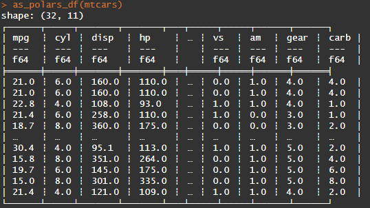

First of all we need to install all the packages and create an big random dataset needed for this book to work, so don’t bother with the following code:
Code
# Installation of packages for cookbook-rpolarspackages <-c('dplyr','data.table','tidyr','arrow','DBI','fakir','tictoc','duckdb','microbenchmark','readr','fs','ggplot2','pryr','dbplyr','forcats','patchwork')installed_packages <- packages %in%rownames(installed.packages())if (any(installed_packages ==FALSE)) {install.packages(packages[!installed_packages], dependencies =TRUE)}# Loading packagesinvisible(lapply(packages, library, character.only =TRUE))# Creation of iris_dtiris_dt <-as.data.table(iris)
Polars’ main functions are stored in the “pl” namespace and can be accessed using the “pl$” prefix to prevent conflicts with other packages and base R function names. For more, see here.
1.2.1 Convert a R data.frame to a polars DataFrame
First example to convert the most famous R data frame (iris) to a Polars DataFrame:
A DataFrame is a 2-dimensional data structure that is backed by a Series, and it can be seen as an abstraction of a collection (e.g. list) of Series.
In polars objects, DataFrame object are like R data.frame and close to a tibble and a data.table object. DataFrame has some attributes and you can see here to know how you can use it.
# Creation of a DataFrame object with Seriesmydf <- pl$DataFrame(col1 = mynumbers_serie,col2 = myletters_serie)# Creation of a DataFrame object with Series and vectorspl$DataFrame(col1 = mynumbers_serie,col2 = myletters_vector)
1.4 Manipulation of Series and DataFrames with R standard functions
Series and DataFrames can be manipulated with a lot of standard R functions.
Some examples with Series:
sum(mynumbers_serie)
[1] 6
paste(myletters_serie,collapse ="")
[1] "abc"
Some examples with DataFrames:
names(mydf)
[1] "col1" "col2"
ncol(mydf)
[1] 2
1.5 Expressions
Here I’m quoting what Damian Skrzypiec said in his blog about Polars expressions:
One of fundamental building blocks in Polars are Polars expressions. In general Polars expression is any function that transforms Polars series into another Polars series. There are few advantageous aspects of Polars expressions. Firstly expressions are optimized. Particularly if expression need to be executed on multiple columns, then it will be parallelized. It’s one of reasons behind Polars high performance. Another aspect is the fact the Polars implements an extensive set of builtin expressions that user can compose (chain) into more complex expressions.
If you have read this far and managed to reproduce the examples, congratulations! You are ready to dive into the deep end of Polars with R in the next parts of this cookbook! 🚀
1.6 DataFrames display on Windows
Note
This section is for Windows and RStudio users only!
As a Windows and RStudio user, you may encounter a problem with the display of Polars DataFrames.
Here’s what can happen with the default font in RStudio Lucida Console:

To resolve this display problem, I recommend using the Cascadia font: